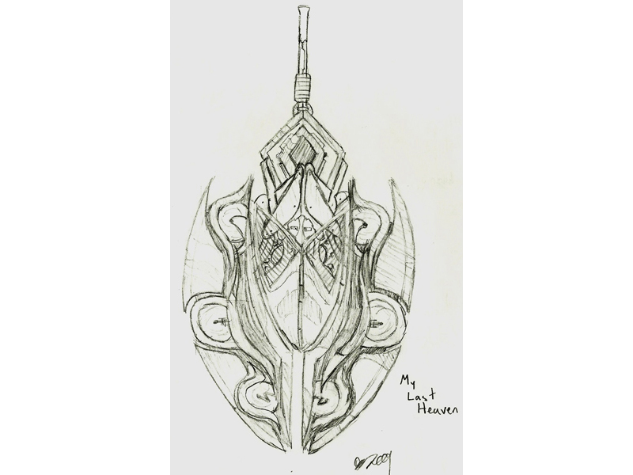
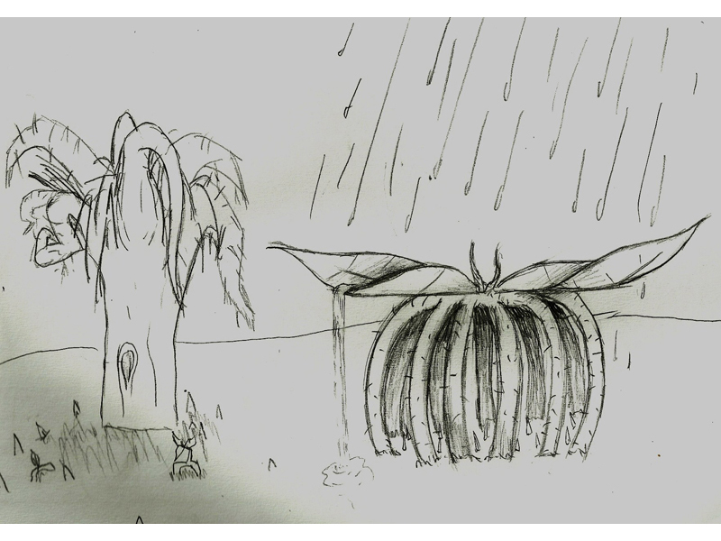
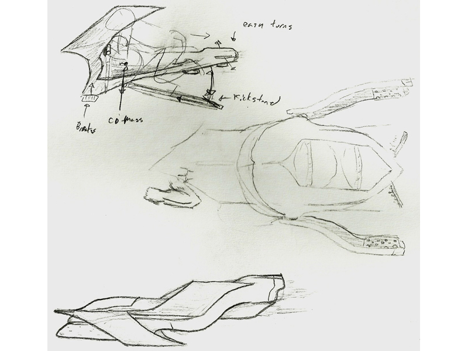
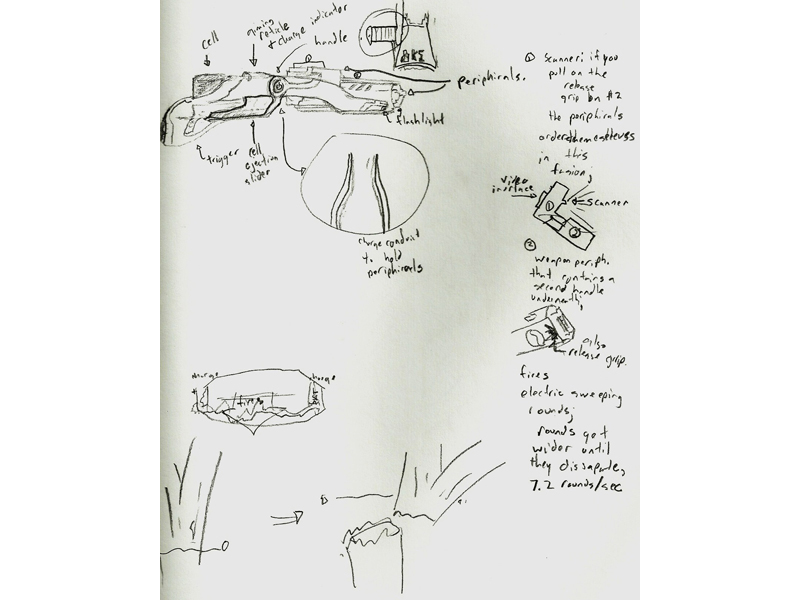
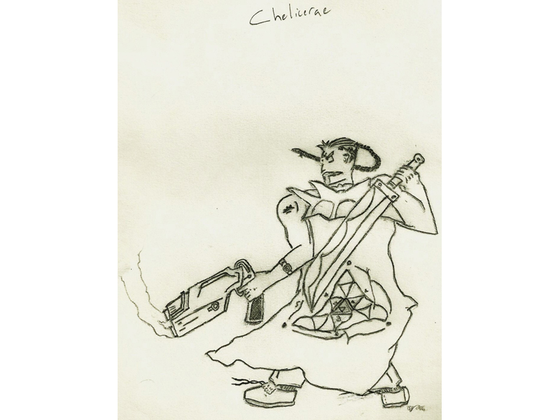
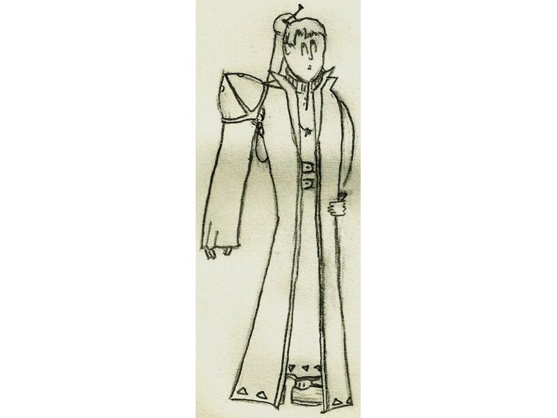
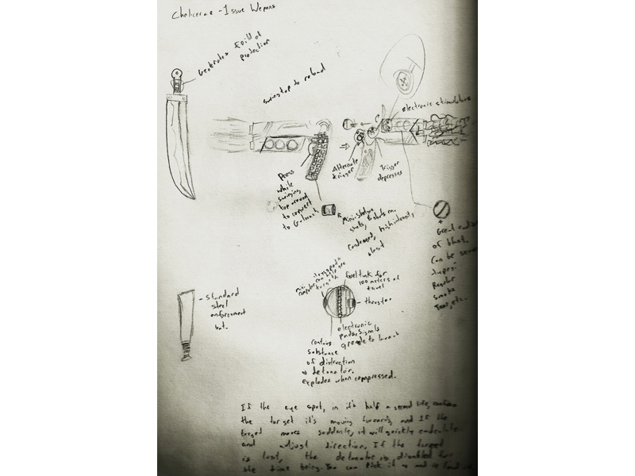
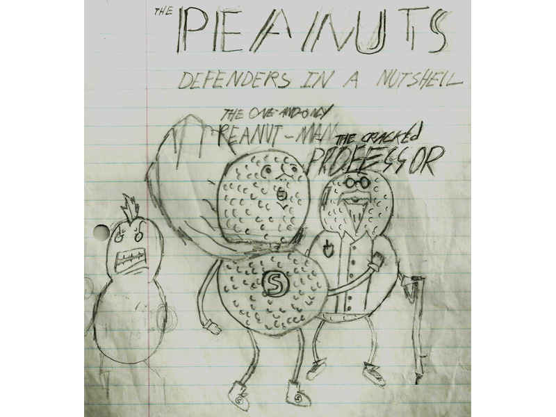

|
|
|
| Page: 1 2 3 4 |
|---|
What a veritable hodgepodge of material. The two creatures are possible MLH designs, the couplets are possible lines for Verse II of Ventures, and the gun is entirely unrelated to any concepts I've mentioned thusfar on this site.
A possible MLH weapon; although I fail to see how it would work into the Dynamic Equipment System. The little disks are supposed to have some sort of electric shock effect and the mechanism in the center is supposed to split the axe apart into two wieldable halves. I think the little disks are supposed to come out a little bit when this happens, but I'm not sure. I just started drawing more than one picture of a visual idea recently and I really wish I would've started doing that earlier.
I think these plants are gonna start popping up in the hokey "Space Knight" story, but I could see them showing up in MLH as well. The first is just an upside-down tree. The second is a little more interesting; It's a venus-flytrap kind of doohickey which has big leaves that are resistant to the acidic rain which apparently falls consistantly in the area. Little animals and such go under it for shelter, trip one of the little roots poking out from the soil there, and get entrapped. The leaves wrap down and the plant has a feast. Yum!
The top half of this picture deals exclusively with the "Space Knight" story. The bottom half is basically just me trying to think about how one might go about attaching a pair of mechanized angel wings to someone, say, an actor. Both surprisingly and unsurprisingly, this is a very important element in Verse II of Ventures.
It's a hovercycle and some sort of spaceship! "Space Knights," maybe? No, it's some other sort of futuristic thing which I'll announce later.
It's a cool space gun from that other space thing that you just saw before! (Hint - that totally unrelated pistol you might have seen before is related to this same space thing. Exciting!)
This is me vaugely desiging a robot for that space thing you saw before which has arms that can flip around and shoot out their elbows! See if you can find out how I justfy this mechanically, because I surely can't.
This has nothing to do with the "Other Space Story" at all; it's an Algarian policeman, a.k.a. a Chelicerae, a.k.a. a:
"Oh no, he didn't just make up his own language." This language, this policeman and the society he belongs to are all yet another concept of mine. Go figure.
This particularly ugly drawing is supposed to be a "genoritor." I don't like that name, so I'll probably change it. Also, this is supposed to be a girl. Bear in mind I drew this half a decade ago.
Another Algarian offical; he's supposed to be a judge of some kind. One of my favorite costume ideas; maybe Lady Gaga will buy it.
A more accurate diagram regaurding how the Chelicerae's weaponry functions. The gun's barrel can rotate around 180 degrees, making it a grenade launcher, effectively. I think on the drawing I said the Chl.'s sword has some sort of force field generator, but that's just rediculous. I don't think I understood physics when I drew this.
What...
Haha, just making sure you were paying attention. This drawing basically represents about a hundred other retarded drawings I did in my younger days.